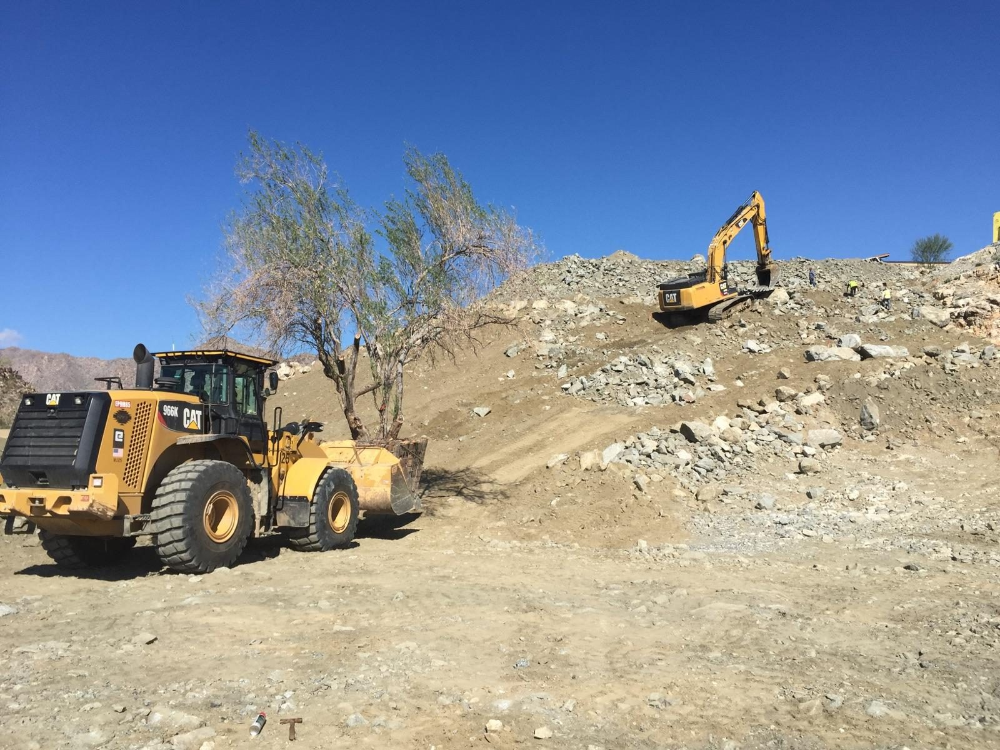
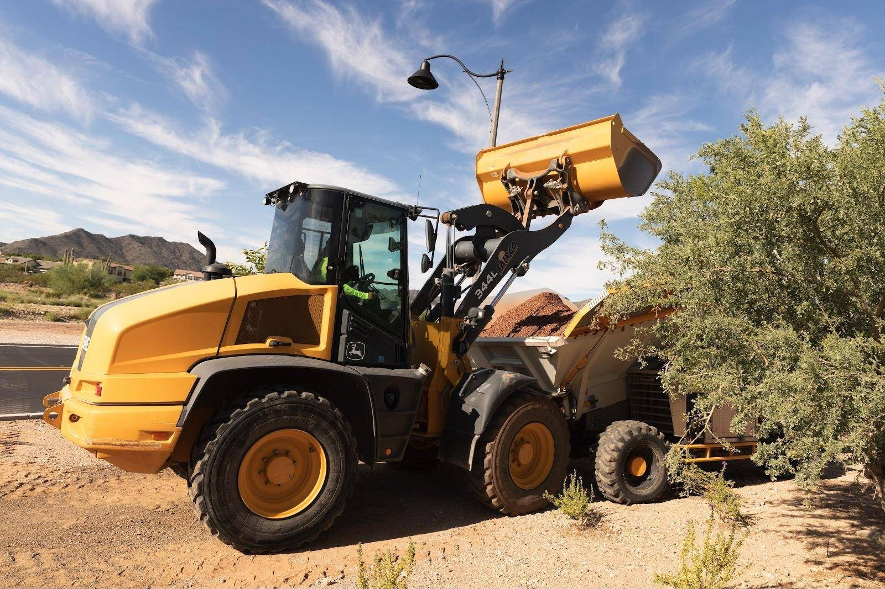
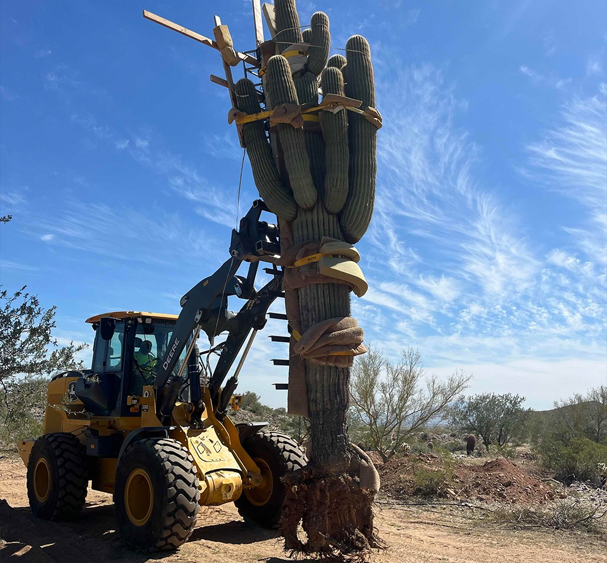
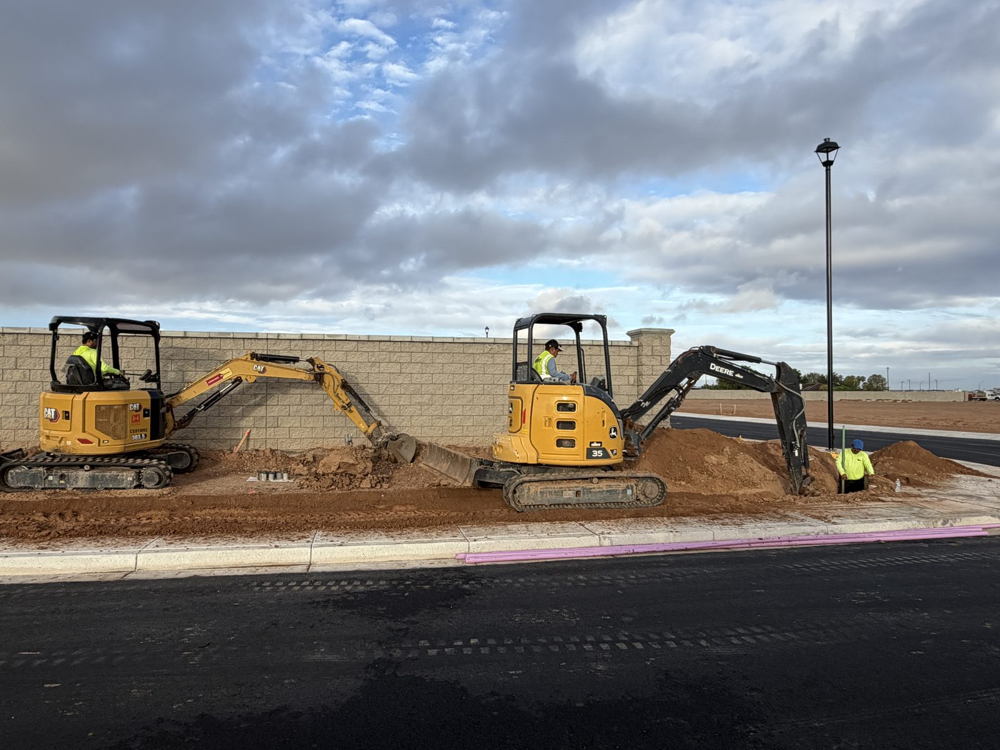
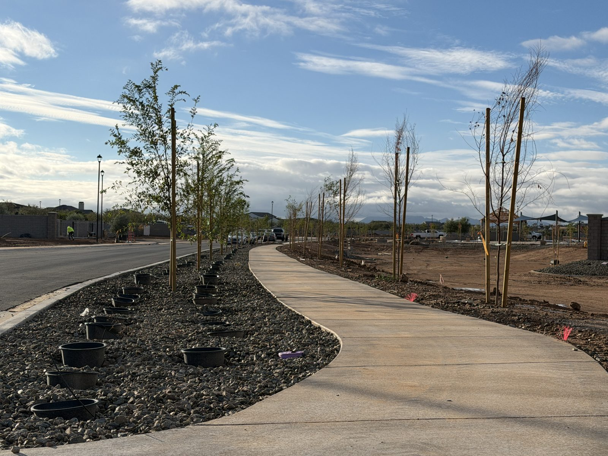

Landscape Development
We bring the master plan to life.
We take the landscape from raw site to complete build-out, from salvage and grading through lakes, pump systems, smart irrigation and final installation, ready to transition to our Landscape Management team.


The same team from planning to closeout.
Since 1978, Fairco has worked alongside real estate developers and homebuilders across Arizona, California and Nevada. That history gives our team a working knowledge of the challenges developers face, and practical ways to solve them.
The team that bids the project is the team that builds it, from initial planning through construction and closeout, whatever its size.
On schedule, in scope and on budget, with meticulous attention to detail and quality workmanship.
How we deliver the work
Landscape Construction
The right resources to build a functional landscape that exceeds expectations.
- General contractor, project manager or specialty contractor
- Softscape and hardscape construction
- Built with safety, sustainability, cost and environmental impact in mind
- Flexibility and expertise across every phase of the project
Project Management
Experienced project managers who deliver on time and on budget.
- Submittals, approvals and compliance paperwork
- A detailed project schedule with key milestones
- Resource coordination with close attention to detail
- Accurate estimates that prioritize key features and avoid budget surprises
Native Salvage Services
Salvage programs tailored to the requirements of each site.
- Boundary staking
- Pruning
- Tree boxing
- Removal
- Nursery setup & maintenance
- Reinstallation
- Native plant inventory management
Know what the site holds before you build.
Site analysis includes plant viability studies and vegetation mapping, giving developers, land planners and engineers the budget information to relocate plants or set aside areas to leave undisturbed. Surveys establish the quantity and species of salvageable plants, documentation meets government agency requirements, and the inventory can be built into the landscape plan using manual methods or GPS.
- Species inventory
- GPS mapping
- Plant valuation
- Vegetation mapping
- Plants supplied from existing inventory
- Surplus plant sales

Land development services
- Grading & site preparation
- Landscape construction
- Irrigation mainlines & systems
- Smart controllers & 2-wire systems
- Lakes, pump stations & water features
- Turf, plant & tree installation
- Monuments, entries, play areas, shade structures & site structures
- Cactus, native plant & large tree salvage

Built for the way the community will be used.
Our specialized teams are licensed and bondable in Arizona, California and Nevada for landscape construction, renovation and general contracting.
Community spaces
Parks, golf courses, activity centers and other community spaces, built new or brought back to life.
Lakes and water systems
Lakes planned and built with their pumping systems and aquifers.
Amenities and site features
Walking paths, gardens, living walls, ramadas and lighting.
Community infrastructure
New landscapes, irrigation systems and the infrastructure behind them.
The right feel
A landscape suited to the project, from a luxury resort to a family-friendly park.
Built with the long-term performance of the property in mind.
Specializing in your most important projects
Master-planned communities
Landscape infrastructure for the whole build-out, working alongside the developer's team for the life of the project.
- Verrado
- Morrison Ranch
- Estrella
Military housing
Base housing refreshed with reliable crews, quality workmanship and attention to detail.
- San Diego Military Housing
- Fort Ord, Lower Stilwell
Multi-family complexes
Apartments, condominiums and build-to-rent communities.
- Ocean Street Apartments
- Urbana
- The Jefferson
- Carmel Pacific Ridge
Resort and commercial
Resorts, hotels, casinos and other commercial projects.
- Talking Stick Resort
- Fashion Island Marriott
- L.A. Live Nokia Center & Plaza
- Rincon Casino Resort

Ready for long-term care.
When installation is complete, the landscape can transition directly to our Landscape Management team, so the property stays with the company that built it.
Water, trees and future improvements are managed by one accountable team from day one.
Landscape Management- 1978Founded. Family-owned ever since.
- 3States: Arizona, California and Nevada.
- 136Employees.
- 0.66EMR, against an industry standard of 1.0.
- ZeroOSHA recordable incidents across six consecutive years.
One landscape partner. Start to finish.
Tell us about the property. We'll walk it, tell you what we see, and put a plan and a number in writing.
Request a Proposal- (844) 210-8904
- www.FaircoLG.com
- Phoenix, AZ / San Diego, CA